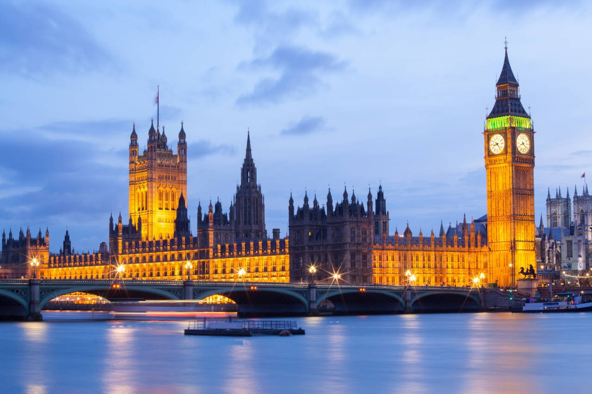
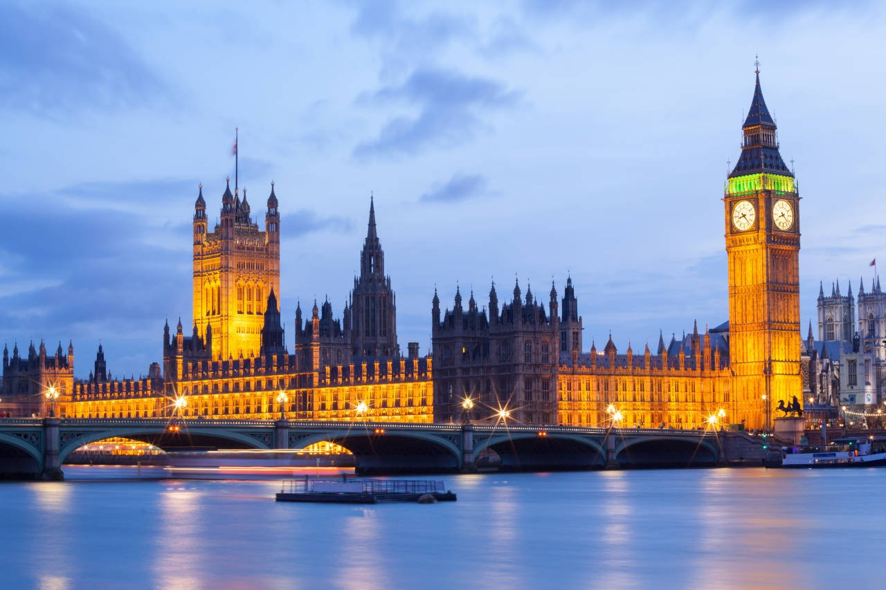
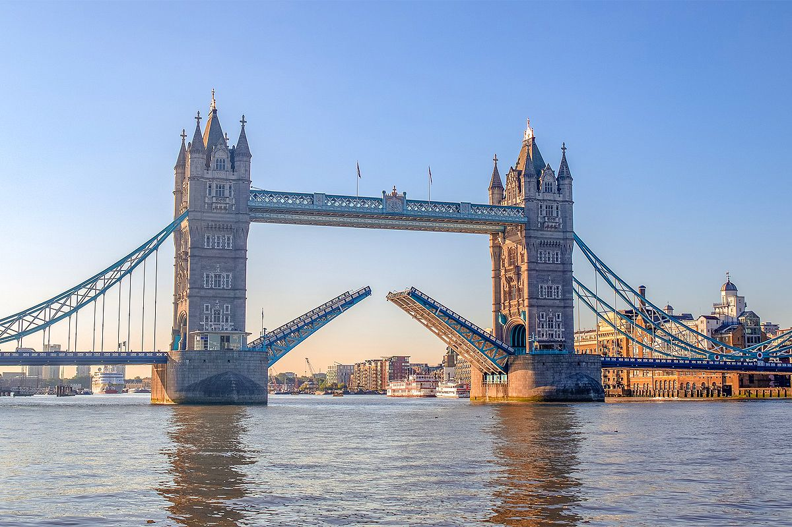
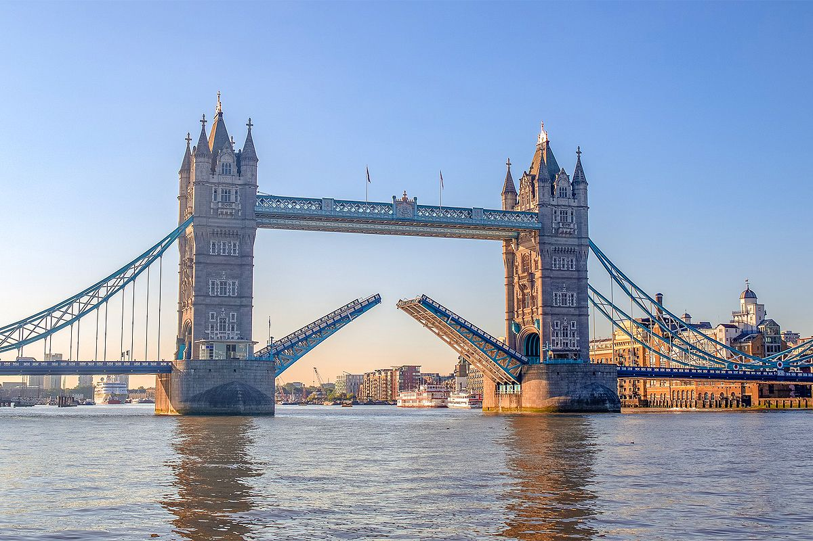

Ville de Londres
Au IIIème siècle, Londinium et son port abritaient une population plus importante, comptant quelques 500 000 habitants. Ruinée par les invasions anglo-saxonnes au Vème siècle, c'est au VIIème siècle que la ville est devenue le siège épiscopal et la capitale du petit royaume d'Essex.
Londres, capitale du Royaume-Uni, est une ville dynamique et multiculturelle connue pour son histoire fascinante, son architecture emblématique, sa scène artistique et ses institutions culturelles renommées.
La ville abrite des sites emblématiques tels que le Palais de Buckingham, la Tour de Londres, le British Museum et le London Eye.
 

 
